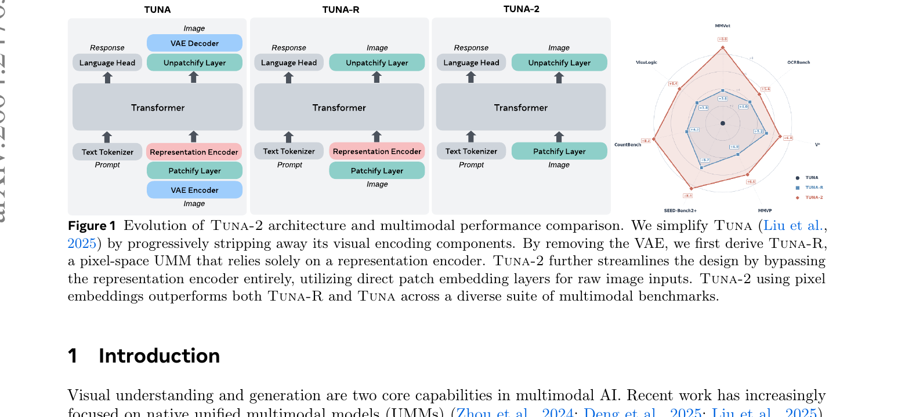
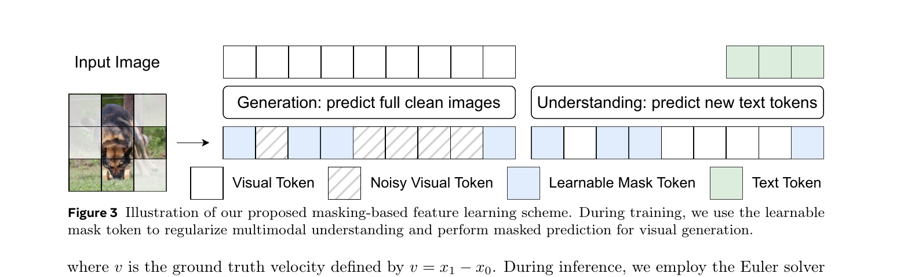
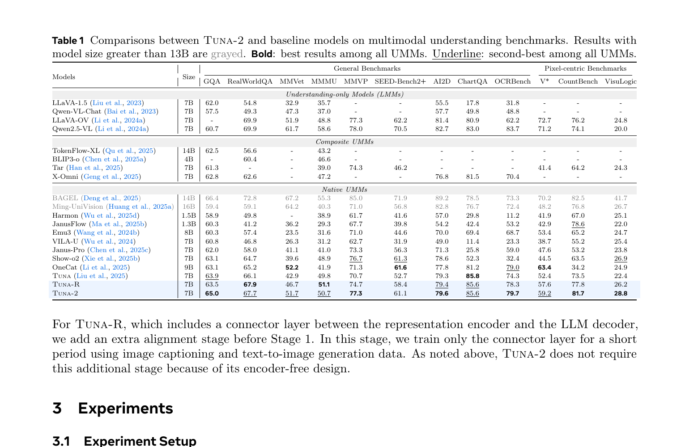
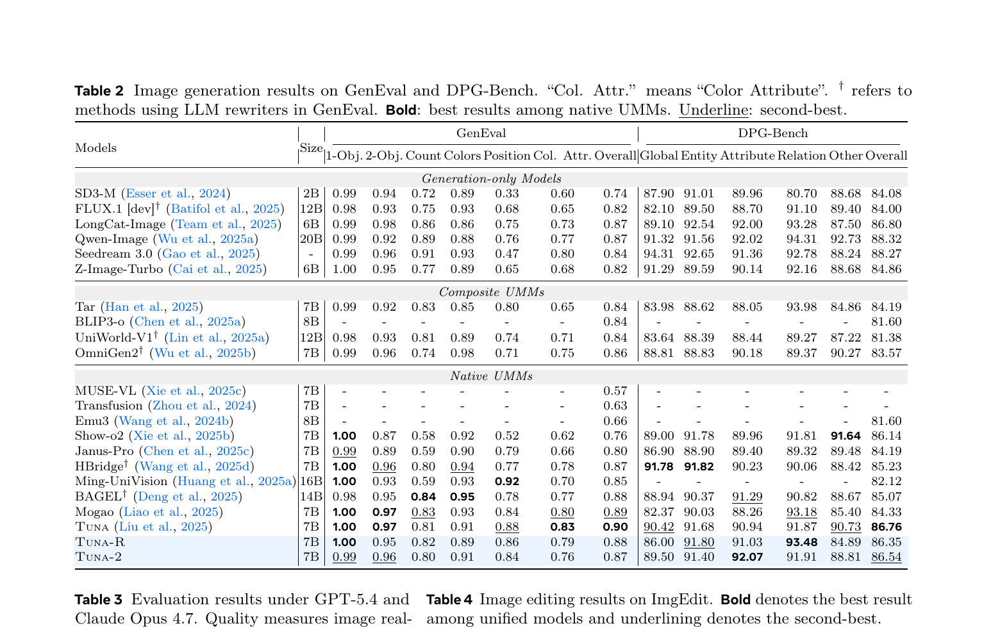
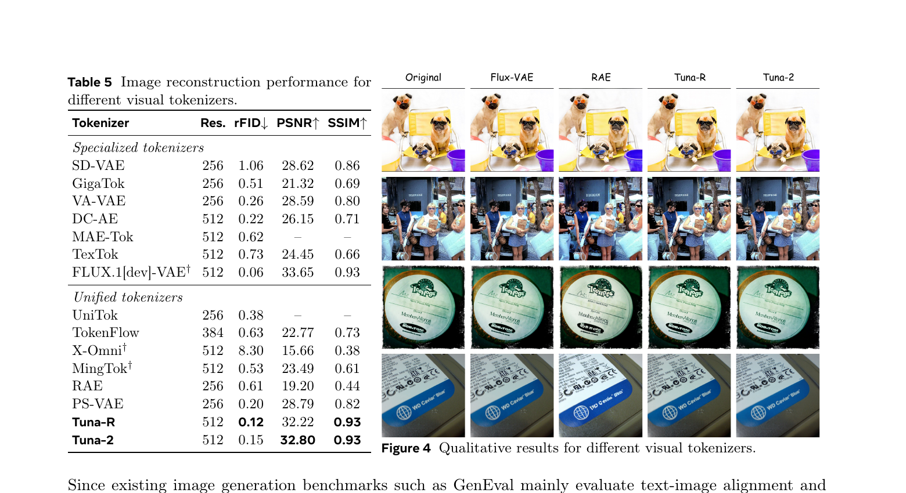
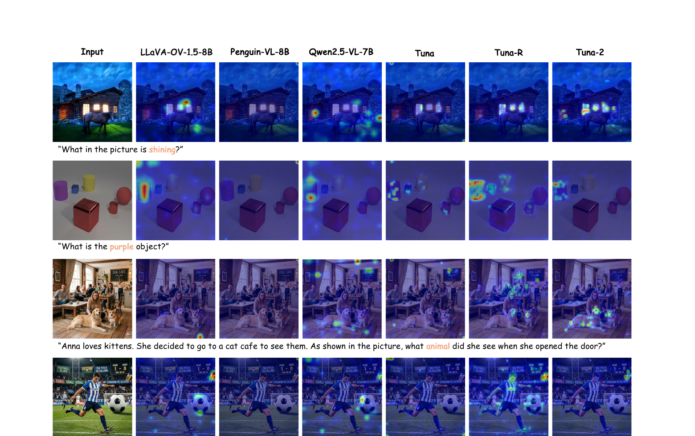
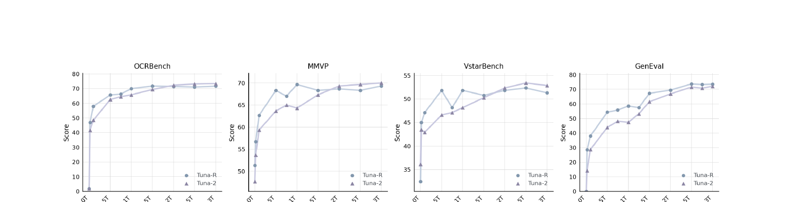
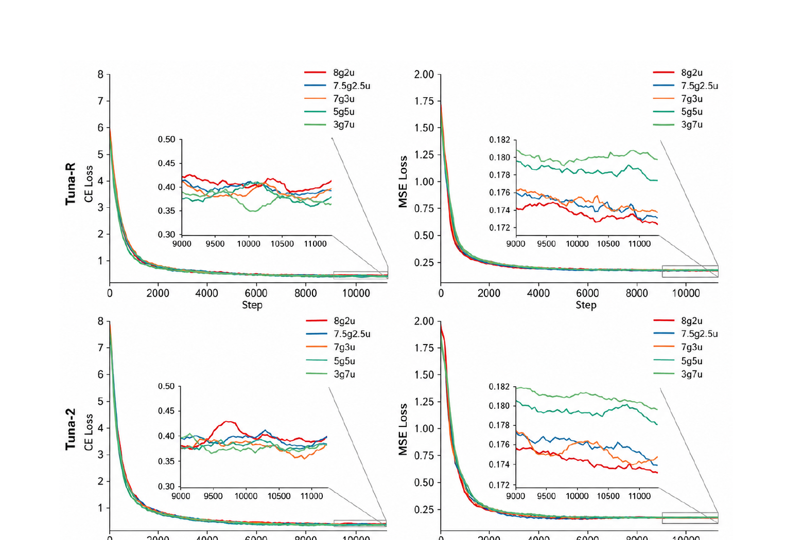

Tuna-2: Pixel Embeddings Beat Vision Encoders for Multimodal Understanding and Generation
1. 出发点 (Motivation)
这篇论文是 SenseNova-U1 在 GenEval 表里反复对比的 Tuna 系列的正式续作。背景跟 SenseNova-U1 几乎一样的诉求 — 干掉 VAE 和 vision encoder 做端到端 — 但 Meta+港大+滑铁卢这队用更"实验科学"的路数: 给出三个连续简化的变体, 做受控对比。
具体要解决的痛点:
- 表示空间错位: 传统 UMM 用 CLIP/SigLIP 做理解, 用 VQ-VAE 做生成, 两套编码器目标完全不同, 训出来的特征互不兼容。
- VAE 信息瓶颈: 8× / 16× 压缩本质上是有损的, 把图先过 VAE 再过 vision encoder 等于两次降维, 对细粒度感知 (小物体、稠密细节) 是致命的。
- 预训练编码器的归纳偏置: 固定输入分辨率、抽象掉低层视觉细节、对 OCR / counting 等任务不友好。
核心问题: 能不能彻底丢掉预训练 vision encoder, 让模型直接从原始像素端到端学习, 并且反过来得到更强的视觉表征?
论文的答案是"可以, 而且 understanding 上更好" — 这跟传统直觉是相反的 (大家以为 SigLIP/DINO 的语义 prior 是宝贵的)。证据是一个三阶段对照实验:
| 变体 | VAE | Repr Encoder | 用什么编图 |
|---|---|---|---|
| Tuna (基线) | ✓ | ✓ (SigLIP 2) | VAE latent 后再过 SigLIP |
| Tuna-R (中间) | ✗ | ✓ (SigLIP 2) | 原始像素 → SigLIP |
| Tuna-2 (终态) | ✗ | ✗ | 原始像素 → Conv2d patchify |
2. 方法 (Method) — 高中生友好 + 数学严谨
核心思想 (类比)
把"看懂图"和"画图"这两件事放进同一个 transformer 里, 有三种做法:
- 双眼镜派 (Tuna): 戴一副"看图眼镜" (SigLIP) 看图, 戴一副"画图眼镜" (VAE) 画图。问题: 两副眼镜的世界观不同, 中间还要翻译。
- 单眼镜派 (Tuna-R): 只戴"看图眼镜" (SigLIP), 看的时候直接用、画的时候也强行用同一副 — 比上面好, 但 SigLIP 是为"分类"训练的, 不擅长画细节。
- 裸眼派 (Tuna-2): 不戴眼镜, 直接拿肉眼看像素。看似最弱, 但训练数据一多, 肉眼反而看得最准, 尤其是数细节 (counting、OCR、小物体识别)。
"裸眼"具体是: 一个 Conv2d + RMSNorm 就完了。没有预训练 VE, 没有 VAE, patch 之后直接当 token 喂给 LLM。

2.1 三阶段架构演化
从 Tuna 砍到 Tuna-2
共同 backbone: Qwen2.5-7B-Instruct。Diffusion head 是一个 10 层的 ModulatedAttentionBlock 串接 (类 DiT)。三个版本的差异只在视觉编码:
- Tuna: VAE encoder → SigLIP 2 → connector → LLM
- Tuna-R: SigLIP 2 (直接吃原图) → connector → LLM。Connector 需要单独 alignment stage (3K steps, lr=5e-4)。
- Tuna-2:
nn.Conv2d(3, 1152, kernel=16, stride=16) + RMSNorm→ LLM。不需要 connector alignment stage, 训练 pipeline 进一步简化。
repo/tuna/models/vision/patch_embed.py:L14-L64 — 整个 SimplePatchEmbedding 就这么短
class SimplePatchEmbedding(nn.Module):
"""Simple Conv2D-based patchifier with RMSNorm.
Used by the "no encoder" Tuna variant (variant C). Takes raw RGB pixel
values, splits them into non-overlapping patches via a strided Conv2d,
and applies RMSNorm on the channel dimension."""
def __init__(self, patch_size: int = 16, hidden_size: int = 1152, in_channels: int = 3):
super().__init__()
# Conv2d patchify: (B, C, H, W) -> (B, hidden_size, H/p, W/p)
self.patch_embedding = nn.Conv2d(
in_channels=in_channels, out_channels=hidden_size,
kernel_size=patch_size, stride=patch_size, bias=True,
)
self.norm = nn.RMSNorm(hidden_size)
def forward(self, pixel_values: torch.Tensor) -> torch.Tensor:
embeddings = self.patch_embedding(pixel_values) # (B, h, H/p, W/p)
b, c, h, w = embeddings.shape
embeddings = embeddings.reshape(b, c, h * w).transpose(1, 2) # (B, N, h)
return self.norm(embeddings)
对比 SenseNova-U1 那个两层卷积 + 2D RoPE 的"近无损接口"更朴素 — Tuna-2 就一层 Conv2d (kernel=stride=16) + RMSNorm, 没有 2D 位置编码 (位置信息靠 LLM 的 1D RoPE 加 modality-aware 改造)。
2.2 像素空间 Flow Matching (x-prediction + v-loss)
生成端没有 VAE, 直接在像素空间做扩散去噪。沿用 JiT (Li & He, 2025) 的两个 trick: x-prediction 和 v-loss reweighting。
定义
Rectified flow 线性插值定义"含噪像素" (Eq. 1):
- \(x_1\): 真实干净图 (注意论文用 \(x_1\) 表示"目的地"; 部分扩散文献用 \(x_0\), 容易混淆)
- \(x_0\): 起点纯噪声
- \(t\) 是"信号纯度"刻度: \(t=0\) 全噪, \(t=1\) 干净图
模型 \(\pi_\theta\) 直接预测干净图 \(x_\theta\) (Eq. 2):
其中 \(c\) 是条件 (T2I 时是文本, 编辑时是文本+源图)。
预测的 \(x_\theta\) 转换为速度 (Eq. 3):
训练时用 MSE 让 \(v_\theta\) 逼近真速度 \(v = x_1 - x_0\) (Eq. 4):
为什么是 "x-prediction + v-loss" 这个组合?
直接看 Eq. 3 可以推出: 在 v-loss 上做 MSE, 等价于在 x-prediction 上做带 \(1/(1-t)^2\) 权重的 MSE。代入:
这个权重的好处是: 当 \(t \to 1\) (接近干净图), 权重 \(\to \infty\), 强迫模型在低噪声端预测得更准 — 而这正是肉眼最敏感的细节区域。代码里这个权重显式写出来:
repo/tuna/models/jit_utils.py:L74-L90 — JiT-style x0 prediction loss with v-loss reweighting
def jit_x0_prediction_loss(x0_pred, x0_target, t=None, mask=None):
"""MSE on x0 with optional 1/(1-t)^2 weighting and a token mask."""
loss = F.mse_loss(x0_pred, x0_target, reduction="none")
if t is not None and t.shape[0] == loss.shape[0]:
t_expand = t.view(-1, *([1] * (loss.ndim - 1)))
weights = 1.0 / (1.0 - t_expand).clamp(min=5e-2) ** 2 # ← v-loss 重加权
loss = loss * weights
if mask is not None:
loss = loss[mask.bool()].mean()
else:
loss = loss.mean()
return loss
clamp(min=5e-2) 这里关键 — 防止 \(t \to 1\) 时权重爆炸, 把 \((1-t)\) 下限钉在 0.05, 等效最大权重 \(1/0.05^2 = 400\)。这是论文没提的数值稳定 trick。
采样
推理时 Euler 求解 ODE: \(x_{t'} = x_t + (t' - t) v_\theta\)。代码里默认 50 步, 也支持 Heun。
2.3 Masking-based Visual Representation Learning (论文最关键的 trick)
这是 Tuna-2 区别于 NEO / SenseNova-U1 等同类工作的地方。问题: 像素空间维度太高, 模型容易学到"作弊捷径" (例如复制粘贴局部纹理而不理解语义)。
方案: 训练时随机 mask 一部分 patch, 用可学习的 mask token 替代:

统一的 masking 操作, 两种角色:
- 生成任务: 让 mask token 必须凭借可见 patch 推断被遮的内容 → 类似 MaskGIT / DeTok 的"补全"训练。
- 理解任务: 让模型在不完整视觉输入下也能答对问题 → 类似 MAE / SigLIP 2 的"掩码语义学习"。
关键工程细节
- Mask ratio 默认 75% (跟 MAE 一样), 但每个样本独立从 \([\text{min}, 0.75]\) 均匀采样
- Mask token 初始化为
scale * randn, 其中scale = hidden_size^{-0.5} - Masking 不是从头开 — 只在 pretraining 最后 40% 启用。前 60% 让模型先建立基础多模态能力, 再加 mask 当 regularizer。
- 消融显示 (Tab. 6): Tuna-2 比 Tuna-R 更受益于 masking (Tuna-R 用 SigLIP 2, 而 SigLIP 2 本身预训练就有类似 masked 目标, 边际收益小)。
repo/tuna/models/tuna_2_pixel.py:L397-L415 — masking 应用 (训练时, 在 patch embedding 之后)
# Apply masked image (DeTok-style) after patch embedding
if self.enable_mask_token and self.training:
import random
import numpy as np
B, N, D = image_embeds.shape
# Generate random mask for each sample in batch
for batch_idx in range(B):
mask_ratio = random.uniform(
self.config.masked_image_ratio_min, # 默认 0.0
self.masked_image_ratio # 默认 0.75
)
num_masked = int(N * mask_ratio)
if num_masked > 0:
mask_indices = np.random.choice(N, num_masked, replace=False)
image_embeds[batch_idx, mask_indices] = self.mask_token
注意: 实现是 per-sample Python for 循环 + np.random.choice — 不是向量化的。在大 batch + 高分辨率下应该是个 训练性能瓶颈, 但论文没提。
2.4 两阶段训练 Pipeline
整套训练只有两阶段, 跟 SenseNova-U1 的六阶段比简单很多:
- Stage 1 — Full-model pretraining (300K steps): 端到端联合训练理解 (image captioning) + 生成 (text-to-image) + 纯文本 (Nemotron)。数据配比 70% caption : 30% T2I, 加 20% text-only。LR = 1e-4, AdamW, 64 节点。
- Stage 2 — Supervised finetuning (50K steps): 加入 image editing (OmniEdit 2M), instruction following (FineVision 13M), high-quality T2I 数据。LR = 2e-5。
共 550M image-text pairs 用于 Stage 1。Sequence length 固定 16K tokens/GPU。
Tuna-R 多一个 connector alignment stage (Stage 0): 只训 SigLIP-LLM 中间的 projection, 3K steps, lr=5e-4。Tuna-2 因为没 connector 跳过这一步 — 这是 architecture 简化带来的真实节省。
2.5 与代码对照 (Cross-Read)
主模型 Tuna2Pixel 的核心 forward 流程: 文本 token + 图像 patch (可选 mask) → 拼成 sequence → Qwen2.5 LLM → 分两路: text logits 走 NTP loss, image hidden states 走 diffusion head 预测 x0:
repo/tuna/models/tuna_2_pixel.py:L316-L322 — JiT-style x0 prediction head
# Predict x0 (clean image) directly - JiT style
x0_pred = self.diffusion_head_b(last_hidden_states, time_embeds, modality_positions)
loss_disp = torch.tensor(0.0, device=device)
if image_latents is None:
loss_ntp = next_token_prediction(logits, text_labels, self.config.llm_vocab_size)
loss_flow = torch.tensor(0.0, device=device)
return logits, loss_ntp, loss_flow, loss_disp
Loss 组合: NTP (cross-entropy) + JiT (mse on x0 with v-loss reweight):
repo/tuna/models/tuna_2_pixel.py:L325-L340 — 损失计算入口
from tuna.models.misc import jit_x0_prediction_loss
loss_ntp = next_token_prediction(logits, text_labels, self.config.llm_vocab_size)
# JiT-style loss: directly predict clean images (x0)
if t.shape[0] == x0_pred.shape[0]:
t_for_loss = t
elif t.shape[0] == x0_pred.shape[0] * 2:
t_for_loss = t[1::2] # CFG: cond/uncond 交错, 取一半的 t
else:
t_for_loss = None
loss_flow = jit_x0_prediction_loss(
x0_pred, new_image_labels[: x0_pred.shape[0]], t_for_loss, image_masks
)
return logits, loss_ntp, loss_flow, loss_disp
注意中间那段处理 CFG 训练时的 t 交错: 当 batch 维度被翻倍 (cond + uncond), 只取一半的 t 用于 loss reweighting — 这是论文也没提的实现细节。
3. 结论 (Key Findings)
3.1 多模态理解 — Tuna-2 反超 Tuna-R

关键数字 (Tuna-2 7B):
- GQA 65.0 (vs Tuna 63.9, Tuna-R 63.5)
- MMVet 51.7 (vs Tuna 42.9, Tuna-R 46.7) — 提升 +9 pt
- MMVP 77.3 (vs Tuna 70.7, Tuna-R 74.7)
- OCRBench 79.7 (vs Tuna 74.3, Tuna-R 78.3)
- V* (find tiny objects in high-res images): Tuna-2 59.2 vs Tuna 52.4, Tuna-R 57.6
- CountBench: Tuna-2 81.7 vs Tuna 73.5, Tuna-R 77.8
解释: 去掉 SigLIP 这种 "为分类训练" 的语义编码器, 模型反而能保留更多低层像素细节, 在数细节 / 找小物体的任务上反超。
3.2 图像生成 — Tuna-R 微胜, 但差距随数据规模缩小

更有意思的是 LLM-as-judge 评测 (Tab. 3, GPT-5.4 / Claude Opus 4.7): Tuna-2 在 diversity 上显著最优 (48.4% / 41.9% 偏好率), quality 跟 Tuna-R 相当。生成 diversity 高可能是因为没有 SigLIP 这种"语义收敛器"压制了 mode collapse。
3.3 图像重建 — PSNR 32.80 / SSIM 0.93, 同分辨率超过 FLUX VAE

3.4 Attention map 可视化分析 — Tuna-2 不被语言先验带跑偏

3.5 Scaling 行为 — Tuna-R 早期领先, Tuna-2 晚期反超

生成端 (GenEval) 上 Tuna-R 一直略胜, 但 gap 随 token 数缓慢收敛, SFT 之后几乎并列。
4. 实现细节 (Implementation Notes)
4.1 核心架构超参
- LLM backbone: Qwen2.5-7B-Instruct, attn_implementation="sdpa"
- Patch size: 16 (默认 Conv2d kernel=stride=16; SimplePatchEmbedding 中)
- Hidden size (vision side): 1152 (SimplePatchEmbedding 默认) — 比 LLM hidden 3584 小
- Diffusion head: 10 层
ModulatedAttentionBlock+ 1 层FinalLayer(类 DiT, AdaLN 风格) - Mask token init:
scale * randn(1, 1, hidden_size), scale = hidden_size^{-0.5} - 位置编码: 共用 LLM 的 1D RoPE + 一个 image_position_ids buffer; 不像 SenseNova-U1 那样有显式的 2D 位置编码
4.2 v-loss 重加权 + 数值稳定
代码里 jit_x0_prediction_loss 把 v-loss 等价转写成 x-loss × \(1/(1-t)^2\) 权重 (见 §2.2)。(1-t).clamp(min=5e-2) 把权重最大值钉在 400, 防止 \(t \to 1\) 时梯度爆炸 — 论文 §2 没提这个 clamp, 但它对训练稳定性非常关键。
4.3 Masking 应用细节
- 触发条件:
self.enable_mask_token and self.training— 只在训练且开启该 flag 时生效, 推理时不 mask - 逐样本独立采样: per-sample for 循环,
random.uniform(min_ratio, 0.75) - masked_image_ratio_min 默认 0.0 — 也就是 mask 比例从 0% 到 75% 均匀采样, 不是固定 75%
- 替换是 in-place:
image_embeds[batch_idx, mask_indices] = self.mask_token - 论文-代码 gap: §2.2 描述说"masking 应用到 generation 和 understanding examples", 但代码这段是无差别对所有 image 输入应用 mask, 没有区分两类任务。任务区分体现在 loss 计算: 生成任务有 flow loss, 理解任务只有 NTP loss。
4.4 训练 settings (按论文 §3.1)
| 项目 | Stage 1 Pretraining | Stage 2 SFT |
|---|---|---|
| Steps | 300K | 50K |
| LR | 1e-4 | 2e-5 |
| Optimizer | AdamW | AdamW |
| 节点数 | 64 | — |
| Seq length | 16K tokens/GPU | 16K tokens/GPU |
| 数据 | 550M I-T pairs (70% cap + 30% T2I) + 20% text-only (Nemotron) | FineVision 13M + OmniEdit 2M + HQ T2I |
| Masking | 仅最后 40% 启用, p=50% 概率 | — |
4.5 论文 vs 代码的几处不一致
- v-loss reweighting clamp: 论文 Eq. 3-4 是纯数学公式 \(v = (x_\theta - x_t)/(1-t)\), 没提 \(1-t\) 的下限。代码
jit_utils.py:L84用clamp(min=5e-2)— 这是 max-weight=400 的隐含截断, 不是数学定义。 - masked_image_ratio_min: 论文 §2.2 说 "according to a masking ratio", 暗示是单一 ratio。代码默认
min=0.0, max=0.75, 每个样本从这个区间均匀采样 — 实际 mask 比例的均值是 37.5%, 不是 75%。 - Masking 应用时机: 论文 §3.4 说"masking 应用在 pretraining 最后 40% 步数", 代码里这个开关是
enable_mask_token配置项, 由训练脚本控制何时启用, 不是模型自身知道当前 step 然后切换 — 需要外部 scheduler 配合。 - CFG drop 概率: 论文里完全没提 CFG 训练时如何 drop conditioning。代码
tuna_2_pixel.py:L325-L340暗示 batch 维度有 cond/uncond 交错 (t[1::2]), 但具体 drop 概率没在公开代码里找到 — 训练时由外部数据 pipeline 决定。 - Patch size: 论文 Fig.1 写 "Patchify Layer" 没具体说 patch_size。
patch_embed.py默认 16; 但Tuna2Pixel.__init__默认patch_size=2, image_latent_dim=16— 这是 VAE-latent 输入路径的默认值, 真实 pure-pixel 配置需要 patch_size=16, in_channels=3, 通过外部 config 覆盖。论文没明确说哪种是 main config。
4.6 训练 loss 曲线观察 (Fig. 5)

5. 批判性总结 (Critical Assessment)
5.1 优点
- 论文结构罕见地"实验科学": 不是直接提一个新架构, 而是通过 Tuna → Tuna-R → Tuna-2 的连续简化, 给出受控对比。Reader 能看清楚"砍掉 VAE 带来什么变化 (Tuna→Tuna-R) " vs "再砍掉 SigLIP 带来什么变化 (Tuna-R→Tuna-2)"。这比 SenseNova-U1 那种 "一锅端" 的论文叙事更有说服力。
- 反直觉的结论被 Scaling Curve 实证: 不是仅靠最终 benchmark 数字声称 "encoder-free 更好", 而是给了 Fig. 6 的训练曲线 — Tuna-R 早期领先, 后期被 Tuna-2 反超。这清楚说明: SigLIP 的语义先验是训练加速器, 不是天花板提升器。
- 训练 pipeline 极简 + 完整开源: 只有 2 个阶段 (vs SenseNova-U1 的 6 阶段), 训练代码完整放出 (vs SenseNova-U1 的 inference-only). 实验复现门槛低得多。
- Pixel-centric benchmark 的设计: V* / CountBench / VisuLogic 这三个 "细粒度" 任务是论文论点的关键证据 — encoder-free 设计在这些任务上获益最大, 跟 motivation 完全闭环。
- Masking 复用 MAE/DeTok 的设计很巧: 同一个 75% mask 操作同时充当生成的 inpainting 任务和理解的 regularization, 一份 trick 双倍收益。Tab. 6 证明对 Tuna-2 增益更大 (因为 SigLIP-based Tuna-R 已经吃过类似训练目标)。
5.2 不足 / 疑点
- Tuna-2 在生成上一直略输. GenEval 0.87 vs Tuna-R 0.88 / Tuna 0.90 — 差距虽然小但稳定存在。论文 framing 成"sufficient pretraining 后趋同", 但实际差距没消失。生成弱意味着 unify 的代价在哪一端被消化是不平衡的。
- SFT 之后的趋同是 SFT 自身的功劳, 不一定证明架构. Fig. 6 显示 Tuna-2 在 SFT 之后才完全追上 Tuna-R, 但 SFT 数据量很大 (FineVision 13M + OmniEdit 2M), SFT 本身就能拉平很多差异。"native architecture 更受益于 scale"的结论需要更长的 pretraining curve 才更可信。
- Masking ratio 区间没充分消融. 代码默认 [0, 0.75] 均匀采样 (均值 37.5%), 论文 §2.2 又说 75%。这个 区间宽度对效果的影响没做 ablation, 而 MAE 系列论文已经知道 mask 比例非常 sensitive。
- Attention map 可视化的"反直觉"案例 cherry-picked 风险. Fig. 7 的足球/玻璃杯案例只展示了 Tuna-2 答对的情况 — 这种 prompt 设计本身就偏向"裸眼看像素"派的优势。没看到 Tuna-2 答错而 Tuna-R 答对的反向例子, 这种失败案例的对称展示缺失。
- 跟 SenseNova-U1 / NEO-unify 的对比缺位. 这俩是同期 native-encoder-free 路线的直接竞品 (从 Tuna-2 引用列表里能看到这两篇都已发表), 但 Tab. 1/Tab. 2 都没列。论文只跟 Tuna 系列内部和较老的 BAGEL/Janus-Pro 比, 漏掉了最直接的竞品。
- Per-sample Python for 循环做 masking.
tuna_2_pixel.py:L407-L415用 Python 层循环 + numpy 选 indices, 不是向量化的 torch ops。在大 batch (64 节点) + 高分辨率下, 这是训练吞吐瓶颈, 但论文没讨论 throughput。 - Patch size = 16 是否最优? 没消融. 不像 SenseNova-U1 那种 32× 激进压缩, Tuna-2 是 16× — 但论文没尝试更大 patch (32×) 或更小 (8×) 看 trade-off。考虑到 V* / CountBench 这种细粒度任务获益于细 patch, 这个超参的扫描本应该是重要消融。
- "Pixel embeddings beat vision encoders" 的标题略 oversell. 准确说法是"在 SigLIP-2 + Qwen2.5-7B 的特定组合下, 经过 300K steps 训练后, Tuna-2 在多数 understanding 任务上略胜 Tuna-R"。Beat 听上去更强。
5.3 适用 vs 不适用
- ✅ 适用: 需要 fine-grained visual reasoning (OCR / counting / 小目标) 的 unified model 场景; 想要简单可复现训练 pipeline 的研究项目; 希望摆脱 VE/VAE 双重依赖的 native UMM 探索。
- ❌ 不适用: 对生成 quality (尤其是 attribute binding) 要求极高的场景 (Tuna-R / 闭源大模型仍占优); 受限训练算力 (Tuna-2 需要 64 节点 ×300K steps, 不是小作坊能复现的); 短期就要部署的产品 (训练曲线证明它"晚到", 没有足够 token 时反不如 encoder-based)。
5.4 进一步阅读
- JiT [Li & He, 2025] — x-prediction + v-loss 的来源, Tuna-2 的训练 loss 直接 import
- Tuna [Liu et al., 2025] — 同作者的前作, 完整的 VAE + SigLIP 双 encoder 设计
- NEO / Mono-InternVL [Diao et al., 2025; Luo et al., 2025] — 同期"encoder-free for understanding"探索
- SenseNova-U1 / NEO-unify — 同期 native UMM 竞品 (本博客已读, 见 这里)
- MAE [He et al., 2022] / DeTok [Yang et al., 2025] / MaskGIT [Chang et al., 2022] — Tuna-2 masking 策略的思想源头
- REPA [Yu et al., 2024] — 解释了为什么 SigLIP 的 semantic prior 对生成质量重要 (Tuna-2 的 limitation 也由此可解释)